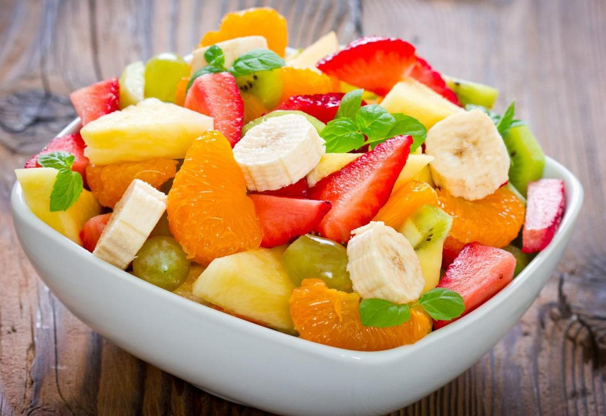

Fruit Salad

Author: Manh An | License: CC-BY-SA-4.0
Description
A bowl of colorful fruit salad is the perfect way to cool down a hot summer day. You can have different fruit according to your tast and what is in season.
Ingredients
- 1 pint of strawberries - cleaned, hulled, and sliced.
- 1 pound of seadless grapes - halved
- 3 kiwis - peeled, and sliced
- 3 bananas - sliced
- 1 (21 ounce) can of peach pie filling
Steps
- In a large bowl, combine the strawberries, grapes, kiwis, and bananas. Gently mix in the peaches. Chill for 1 hour before serving.
This recipe is inspired by Allrecipes